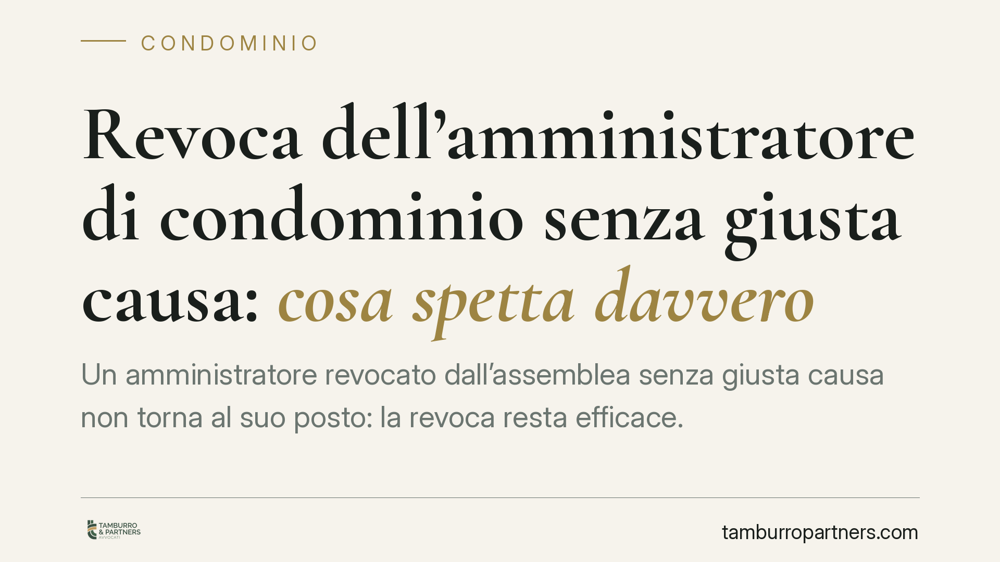

Revoca dell'amministratore di condominio senza giusta causa: cosa spetta davvero
Un amministratore revocato dall'assemblea senza giusta causa non torna al suo posto: la revoca resta efficace. Può però chiedere il risarcimento del danno se dimostra l'illegittimità dell'estromissione. La Cassazione conferma una lettura che unisce l'art. 1129 c.c. alla disciplina del mandato oneroso. Vediamo cosa cambia, in concreto, per amministratori e condomini.

Il caso: revoca deliberata dall'assemblea e richiesta di reintegro
L'assemblea condominiale delibera la revoca dell'amministratore. Quest'ultimo contesta la decisione, sostenendo che manchi una giusta causa, e chiede di essere reintegrato nell'incarico.
La risposta della giurisprudenza è netta: la revoca è pienamente efficace, anche quando manchi una giusta causa. L'amministratore non ha diritto a tornare al suo posto. Ciò che può ottenere, se ne ricorrono i presupposti, è il risarcimento del danno.
È una distinzione decisiva, spesso confusa: un conto è l'efficacia della revoca (che opera comunque), altro è la sua legittimità e la conseguente risarcibilità (che vanno valutate a parte).
> Nota redazionale: gli estremi puntuali dell'ordinanza di Cassazione richiamata dalla fonte sono da verificare in redazione (numero, anno e sezione). Il principio, in ogni caso, è coerente con l'orientamento consolidato.
Inquadramento normativo: art. 1129 c.c. e logica del mandato
L'art. 1129 cod. civ. disciplina nomina, revoca e obblighi dell'amministratore. Prevede che l'assemblea possa revocarlo in ogni tempo e individua, inoltre, ipotesi di revoca giudiziale per gravi irregolarità.
Il vero aggancio del principio risarcitorio, però, sta nella disciplina del mandato. Il rapporto tra condominio e amministratore ha natura di mandato oneroso. Si applica quindi la logica dell'art. 1725 c.c.: il mandato è revocabile in ogni momento, ma la revoca del mandato oneroso prima della scadenza, se avviene senza giusta causa, obbliga il mandante a risarcire i danni.
Da qui la sintesi: la revoca senza giusta causa non è "nulla" e non si annulla; è valida ma può generare responsabilità.
Revoca amministratore condominio: onere della prova e giusta causa
Il punto pratico più delicato riguarda la prova. Chi deve dimostrare cosa?
La giusta causa è una ragione seria e obiettiva che giustifica l'interruzione anticipata del rapporto: gravi inadempimenti, perdita del rapporto fiduciario per fatti documentabili, irregolarità gestionali. Non basta il generico gradimento venuto meno.
Secondo l'impostazione prevalente, l'amministratore che agisce per il risarcimento deve allegare e provare l'assenza di giusta causa, ossia che la revoca è avvenuta in un contesto privo di ragioni legittime. Il condominio, dal canto suo, ha interesse a far emergere e documentare gli elementi che giustificano la decisione. La motivazione contenuta nel verbale assembleare diventa così centrale.
Cosa può ottenere l'amministratore: il quantum
Sul contenuto del risarcimento occorre prudenza. Non esiste un automatismo generalizzato.
Un orientamento giurisprudenziale riconosce, come parametro, i compensi che l'amministratore avrebbe maturato fino alla naturale scadenza dell'incarico (di regola annuale, salvo rinnovi). Si tratta però di un criterio da verificare caso per caso, non di un dato pacifico e uniforme.
È opportuno distinguere due voci:
- i compensi residui dovuti fino alla scadenza dell'incarico in corso;
- gli ulteriori danni (ad esempio pregiudizi professionali o reputazionali), che restano soggetti a prova specifica e rigorosa.
In assenza di prova di un danno effettivo, la sola illegittimità della revoca può non tradursi in un ristoro significativo.
Implicazioni pratiche
Per l'amministratore: contestare la revoca sperando nel reintegro è una strada che la giurisprudenza chiude. L'interesse concreto si sposta sulla tutela risarcitoria, che va costruita su prove.
Per i condomini: la libertà di revoca resta ampia, ma non è gratuita. Deliberare senza motivazione, in presenza di un incarico ancora in corso, espone il condominio a un possibile obbligo risarcitorio.
Cosa fare in concreto
Per l'amministratore:
- Conservare la documentazione della gestione (verbali, rendiconti, comunicazioni) utile a dimostrare la correttezza dell'operato.
- Acquisire copia del verbale di revoca e verificarne la motivazione: l'assenza o la genericità delle ragioni è un elemento a favore.
- Quantificare i compensi residui fino alla scadenza e documentare eventuali danni ulteriori, distinguendoli.
Per i condomini e l'assemblea:
- Verbalizzare in modo puntuale le ragioni della revoca, evitando formule generiche.
- Valutare se sussiste una giusta causa documentabile prima di deliberare, soprattutto a incarico in corso.
- Coordinare la revoca con la nomina del nuovo amministratore per evitare vuoti gestionali.
In ogni caso, è opportuno far precedere ogni decisione da una verifica tecnica della documentazione e del verbale.
---
Contributo informativo a cura di Tamburro & Partners Avvocati - Avv. Giuseppe Tamburro. Non costituisce parere legale.
Ogni condominio ha una storia a sé.
Se gestisci un'amministrazione e vuoi un confronto su una specifica questione condominiale, scrivi allo studio. Ti rispondiamo entro un giorno lavorativo.